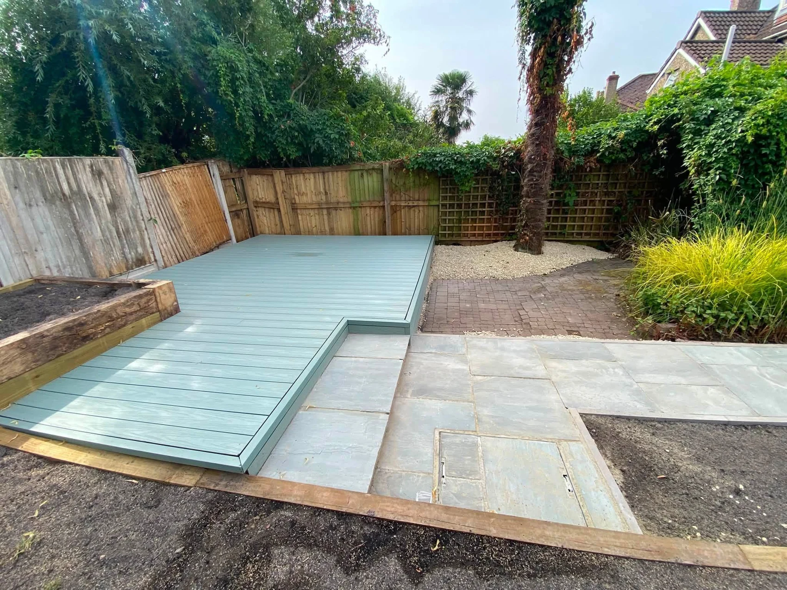
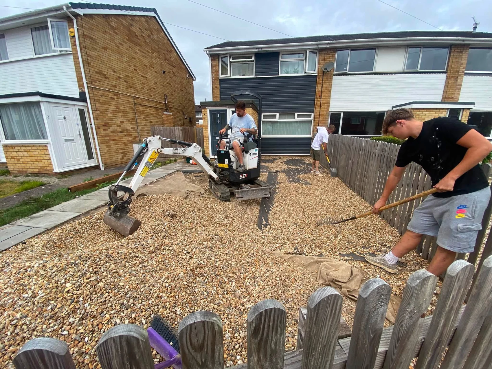

SA Site Services Ltd
Groundworks, landscaping and construction enquiries, from preparing the site to finishing outdoor spaces.
Explore site services →
SA GROUP LTD · BRISTOL
From site preparation and waste removal to patios, decking and garden improvements. Talk to SA Group about the work you need.
Request a quote ↓FROM THE GROUND UP
Scott runs SA Site Services Ltd and SA Clearance & Removals Ltd. Together, the two businesses handle groundworks, landscaping, construction, small demolition and waste management across Bristol and the surrounding areas.
Meet SA Group →

TWO DIVISIONS
Groundworks, landscaping and construction enquiries, from preparing the site to finishing outdoor spaces.
Explore site services →Clearance, removals and waste management, including enquiries for small demolition projects.
Explore clearance and removals →OUR SERVICES
01
Plan the groundworks before the finish. Tell us what you are building or installing, how the site is accessed and what is already in place.
Explore groundworks →02
Make the garden easier to use with a layout that connects paths, paved areas, lawn and boundaries.
Explore landscaping →03
Discuss practical site work for your property or construction project. The scope depends on the site, access and the work you need.
Explore construction & site services →04
Enquire about removing a small structure or clearing an area ready for its next use. We’ll discuss what is involved before agreeing the scope.
Explore small demolition →05
Tell us what needs to go and where it is. SA Clearance & Removals Ltd can discuss the collection, access and volume involved.
Explore clearance & removals →06
Discuss waste removal from a clearance, landscaping job or site project. What can be collected depends on the materials and site conditions.
Explore waste management →FEATURED GARDEN
A closer look at how paved access and decking sit alongside planting beds and gravel.
See all project photos →PROJECT GALLERY
Select a photo to see the full image.
CUSTOMER RECOMMENDATIONS
Based on 19 reviews shown on SA Group’s Facebook profile.
BRISTOL AND SURROUNDING AREAS
Share your postcode, the work you need and any access restrictions. Add photos in WhatsApp if they help explain the job.